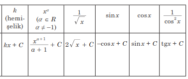
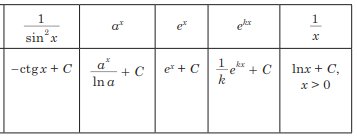

Asyl funksiýa
K e s g i t l e m e . Eger berlen aralygyň ähli x-leri üçin
F'(x) = f(x) (1)
bolsa, onda berlen aralykda F funksiýa f funksiýanyň asyl funksiýasy diýilýär.
Asyl funksiýanyň esasy häsiýeti
T e o r e m a . Eger F funksiýa (a; b) aralykda f funksiýanyň asyl funksiýalarynyň biri bolsa, onda f funksiýanyň (a; b) aralykdaky islendik asyl funksiýasyny
F(x) + C görnüşde ýazmak bolar, bu ýerde C erkin hemişelik san.


Asyl funksiýany tapmagyň 3 düzgüni:
1 - nji düzgün:: Eger f üçin F asyl funksiýa, g üçin G asyl funksiýa bolsa, onda f + g funksiýanyň asyl funksiýasy F + G-e deňdir.
Hakykatdan-da, şert boýunça F' = f we G' = g bolany üçin jemiň önümini hasaplamagyň düzgüni boýunça
(F + G)' = F' + G' = f + g.
2 - nji düzgün: Eger f üçin F asyl funksiýa, k – hemişelik san bolsa, onda kf funksiýanyň asyl funksiýasy kF-e deňdir.
Hakykatdan-da, k hemişelik köpeldijini önüm belgisiniň daşyna çykarmak mümkin, şoňa görä-de:
(kF)' = kF' = kf.
3 - nji düzgün: Eger f(x) üçin F(x) asyl funksiýa bolup, k we b hemişelik san we k ≠ 0 bolsa, onda f(kx + b) funksiýanyň asyl funksiýasy F(kx + b)/k deňdir.
Egriçyzykly trapesiýanyň meýdany:
T e o r e m a: Eger f funksiýa [α; b] kesimde üznüksiz we otrisatel däl, F berlen kesimde onuň asyl funksiýasy bolsa, onda degişli egriçyzykly trapesiýanyň
meýdany
S = F(b) – F(a) (1)
formula bilen hasaplanýar.